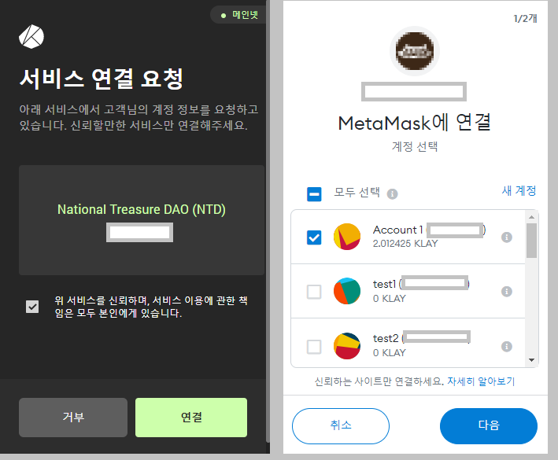

국보 DAO (National Treasure DAO) NFT
민팅 가이드
NTD NFT 민팅
- 시작 : 2022년 1월 23일 오후 9시 ( 한국시간 )
- 종료 : TBD
모든 수량 소진 시 마감 시간 이전에도 민팅이 종료됩니다.
목표 민팅 수량 및 가격
- 목표 NFT 민팅 수량 : 20,000
- NFT 1개 당 300 KLAY ( 민팅 시작시 KLAY 원화 가격에 따라 변동될 수 있음. )
민팅 수량
- 1회 구매당 최대 20개까지 민팅할 수 있습니다.
- 구매 횟수에는 제한이 없습니다.
순서
- Step 1 : 지갑 연결
- 블록체인 지갑을 준비해주세요. (예 : KaiKas 또는 Metamask)
- 지갑의 네트워크는 Klaytn으로 설정되어 있어야 합니다.
- 민팅 페이지 우측 상단의 "지갑 연결" 버튼을 눌러주세요.
- Step 2 : 연결하고자 하는 계정을 선택 후 연결해주세요.
- Step 3 : 민팅 참여하기 버튼을 누르면 팝업이 실행됩니다.
- Step 4 : 수량을 선택한 후 NFT 민팅 버튼을 눌러주세요.
- 지갑의 잔고를 확인하세요... 잔고가 부족하면 NTD NFT 를 민팅할 수 없습니다.
- Step 5 : 민팅이 완료되면 화면에 발행된 NFT가 보여지며, 이미지를 누르면 Opensea로 이동합니다.
*** 가급적 KaiKas 지갑을 사용하시길 추천드립니다.
*** Metamask 지갑을 사용해서 민팅할 경우 Opensea에서 NFT 거래(전송)을 할 수 없습니다.


Metamask 지갑에 Klaytn 네트워크 추가하기
- Metamask extension 지갑을 실행합니다.
- 우측 상단 메뉴 버튼을 클릭합니다.
- 설정 메뉴를 선택하세요.
- 스크롤을 내려 네트워크 메뉴를 선택합니다.
- 네트워크 추가 버튼을 선택합니다.
- 네트워크 추가 화면에 아래 항목들을 입력 후 확인 버튼을 클릭하세요.
- 네트워크 이름 : Klaytn Mainnet (cypress)
- 새 RPC URL : https://public-node-api.klaytnapi.com/v1/cypress
- 체인 ID : 8217
- 통화 기호 : KLAY
- 블록 탐색기 URL : https://scope.klaytn.com/
- Metamask 지갑에 Klaytn 네트워크가 추가 되었는지 확인합니다.